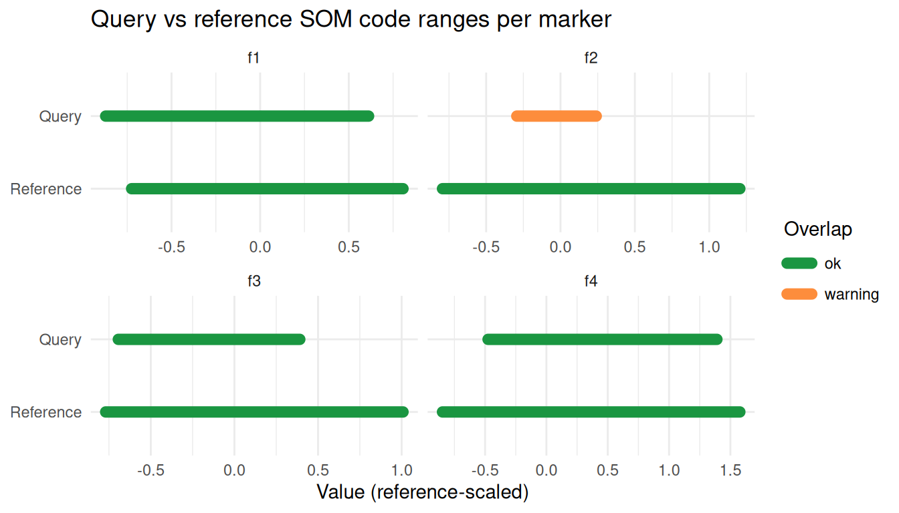
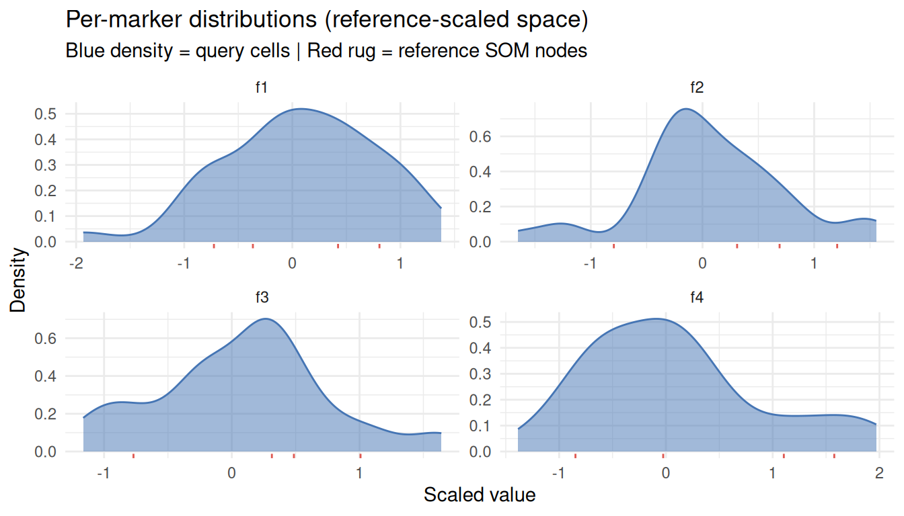
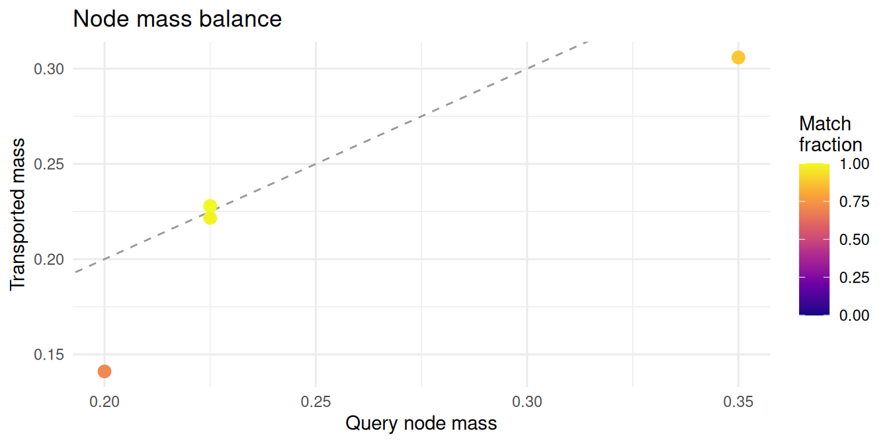
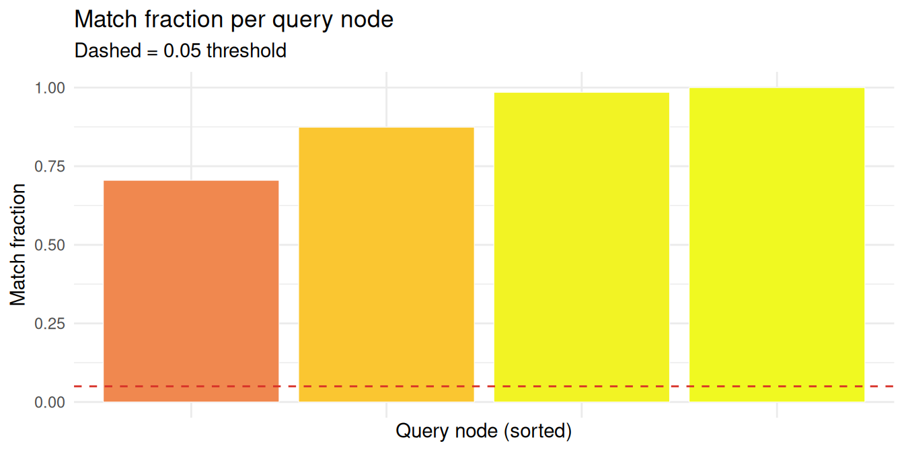
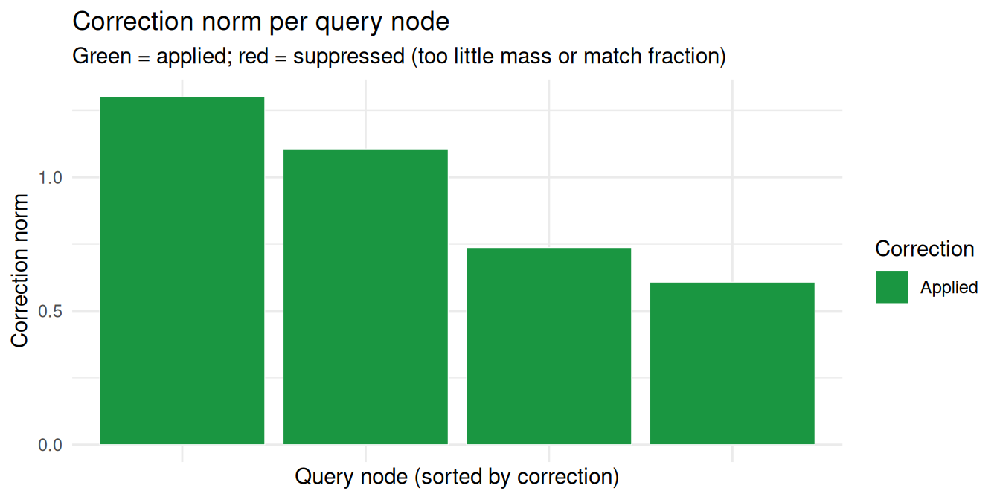
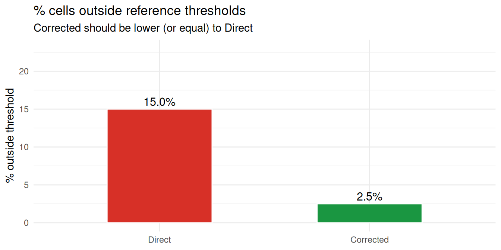
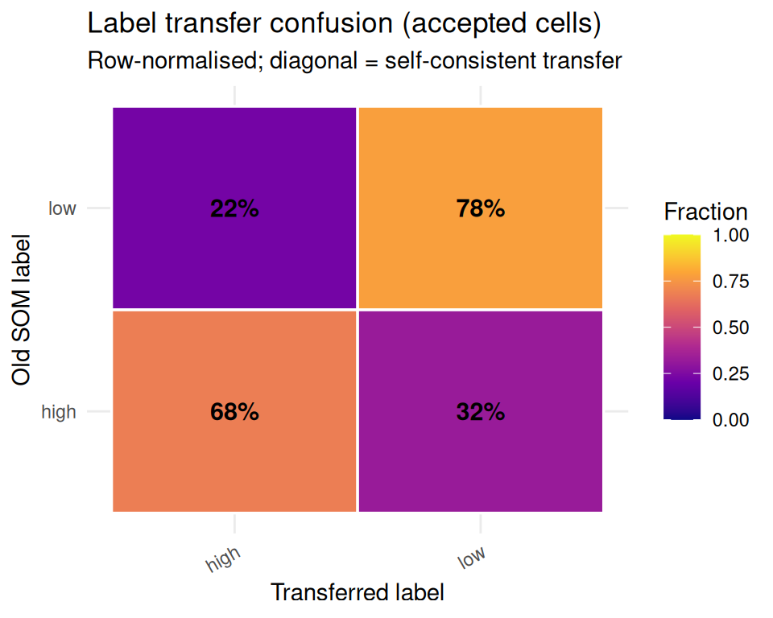

somalign transfers cell labels from a labelled reference
dataset onto a new, unlabelled query dataset when the two were measured
under different conditions (a batch effect). It works at the level of
self-organising maps (SOMs): you train one reference SOM once, then
align each new query SOM to it with codebook-level unbalanced entropic
optimal transport. The alignment carries the reference labels onto the
query, with a per-cell confidence and margin so you can tell which
transfers to trust.
Label transfer is the product to reach for first. The package also
reports corrected coordinates (corrected_som_*,
correction_norm), but those are a diagnostic aid, not a
batch-corrected expression matrix: the correction can over-merge
distinct populations (somalign_topology_audit() flags
this), so do not re-cluster or run differential tests on them. This
vignette walks through the three-step workflow, shows how to read the
output, and points to the diagnostics and follow-up vignettes.
The workflow in three steps
Aligning a query to a reference takes three calls: build the
reference, prepare the query, and fit. The example uses a small
simulated dataset with two populations, low and
high. The query is the same two populations remeasured in a
second batch that offsets each population differently, the kind of shift
a single global recentring cannot undo but node-level alignment can.
library(kohonen)
library(somalign)
set.seed(1)
# Reference: two labelled populations
old <- rbind(
matrix(rnorm(80, mean = -1), ncol = 4),
matrix(rnorm(80, mean = 1), ncol = 4)
)
colnames(old) <- paste0("f", seq_len(ncol(old)))
labels <- rep(c("low", "high"), each = 20)
# Query: same populations, second batch, each population offset differently
query <- old
query[labels == "low", ] <- query[labels == "low", ] + 0.8
query[labels == "high", ] <- query[labels == "high", ] - 0.6
# 1. Train the reference SOM (labels attach the classes to transfer)
reference <- somalign_train_reference(
old,
labels = labels,
grid = kohonen::somgrid(2, 2, "hexagonal"),
rlen = 5
)
# 2. Prepare the query (scaled with the reference centre and scale)
query_obj <- somalign_query(
query,
reference,
grid = kohonen::somgrid(2, 2, "hexagonal"),
rlen = 5
)
# 3. Fit: align the query and reference SOMs, transfer labels
fit <- somalign_fit(query_obj, reference)
#> somalign_fit: 1 query node(s) have match_mass_ratio > 1 (max 1.01); this is expected in unbalanced OT. See diagnostics$ot$match_mass_ratio for details.The label-transfer headline
summary() on a fit gives the label-transfer summary: how
many cells were accepted, the confidence quartiles, the median margin,
and the accepted class mix. Read this first to gauge whether the
transfer is trustworthy before pulling the per-sample table.
summary(fit)
#> <somalign_fit> label-transfer summary
#> cells: 40 | accepted: 40 (100.0%) | classes: 2
#> confidence quartiles (accepted): 0.85 / 0.91 / 0.91
#> median margin (accepted): 0.83
#> accepted class distribution:
#> high 23
#> low 17Reading the per-sample table
somalign_results() returns one row per query sample. The
four columns most users need are the transferred label, its confidence,
whether it was accepted, and the direct-projection reference label to
compare against:
results <- somalign_results(fit)
head(results[, c(
"sample_id",
"transferred_label",
"transferred_label_confidence",
"transferred_label_accepted",
"old_som_label"
)])
#> sample_id transferred_label transferred_label_confidence
#> 1 1 high 0.7436767
#> 2 2 low 0.9998034
#> 3 3 low 0.9998034
#> 4 4 low 0.8537847
#> 5 5 low 0.8537847
#> 6 6 low 0.9998034
#> transferred_label_accepted old_som_label
#> 1 TRUE high
#> 2 TRUE high
#> 3 TRUE high
#> 4 TRUE low
#> 5 TRUE low
#> 6 TRUE lowTo append per-sample metadata (one row per query sample), pass it as
data:
results_meta <- somalign_results(
fit,
data = data.frame(batch = rep("query_1", nrow(query)))
)For a label-only table without the corrected-projection columns, use
somalign_results(fit, include_correction = FALSE).
The full column set
The table carries more columns than the four above, in three groups.
?somalign_results documents every column; the map below
covers the ones you reach for most. Two identifier columns come first:
sample_id, and query_som_unit, the query SOM
node the cell was assigned to.
The direct projection columns assign each sample to
its nearest reference node by Euclidean distance, with no transport
involved: old_som_unit, old_som_distance,
old_som_distance_threshold,
outside_reference_distance,
outside_reference_surprisal,
outside_reference_pvalue,
outside_reference_top_marker, final_status,
old_som_label, and old_som_label_confidence.
Use this group for reference-node assignment and cross-batch composition
summaries.
The label-transfer columns come from the
optimal-transport plan. transferred_label is the top label
from correspondence %*% reference$label_prob;
transferred_label_confidence is the top transported-label
posterior; transferred_label_margin is that posterior minus
the runner-up. transferred_label_second and
transferred_label_second_confidence name the runner-up
itself, for triaging close calls.
transferred_label_accepted is TRUE only when a
node received both enough transported mass and enough label confidence.
Check acceptance, confidence, and margin before using a transferred
label downstream.
The corrected-projection columns are the diagnostic
group: corrected_som_unit,
corrected_som_distance,
corrected_som_distance_threshold,
corrected_outside_reference_distance, and
correction_norm. They describe where a sample lands after
each query SOM node is shifted toward its mass-weighted reference
target. A large correction_norm signals a systematic offset
between the batches and is worth examining, but the corrected assignment
should not replace the direct one.
Comparing composition across batches
To compare cell-type composition across batches, two choices improve
cross-batch reproducibility. First, count from the direct projection
(old_som_unit, old_som_label) or from
somalign_soft_frequencies() rather than the corrected
columns: the barycentric correction can over-merge populations and does
not improve composition reproducibility. Second, quantify abundance
compositionally. Cluster frequencies sum to one, so a raw-frequency
comparison is dominated by the largest clusters and understates how well
rarer ones are recovered. A centred log-ratio (CLR) transform of
per-sample cluster counts, as implemented in the crumblr
package, maps the composition to log-ratio space, downweights low-count
clusters, and is the transform the downstream differential-abundance
models expect:
# counts: a samples-by-cluster integer matrix, e.g. table(sample, old_som_label)
library(crumblr)
cobj <- crumblr(counts) # CLR values in cobj$E, precision weights in cobj$weightsFor softer abundance estimates, aggregate with
somalign_soft_frequencies() before compositional modelling.
Absolute per-cluster proportions stay approximate; the CLR profile is
the reproducible quantity.
Diagnostic plots
The somalign_plot_*() functions cover both
before-projection compatibility checks and after-projection quality
assessment. Each returns a single ggplot you can print
directly or compose with patchwork or
cowplot.
Before projection: are the datasets compatible?
somalign_check_codebook_alignment() tests whether the
query and reference SOM code ranges overlap enough to align;
somalign_plot_codebook_range() shows the result.
chk <- somalign_check_codebook_alignment(query_obj$codebook, reference,
stop_if_critical = FALSE)
#> somalign_check_codebook_alignment: 1 feature(s) show partial mismatch (< 50% range overlap or centroid drift > 3 reference SDs): f2. Label transfer accuracy may be reduced for these markers.
print(chk)
#> somalign codebook alignment check [verdict: warning]
#> Features checked : 4
#> Critical (0% overlap) : 0
#> Warning (partial) : 1
#>
#> Cost matrix (4-feature space):
#> Median pairwise dist² : 3.1675
#> 95th-pctile dist² : 7.6400
#> Cost normalisation × : 3.1675
#> Pairs within 3ε : 12.5%
#>
#> Flagged features:
#> feature overlap_fraction centroid_drift_sd flag
#> f2 0.267 -0.12 warning
somalign_plot_codebook_range(chk)
somalign_plot_marker_distributions() shows per-marker
query densities in reference-scaled space, with reference node
prototypes as a rug. Passing reference_data (reference
cells in reference-scaled coordinates) draws a true second density
instead.
somalign_plot_marker_distributions(query_obj, reference = reference)
After projection: solver quality
A match_fraction near 1 means a query node’s mass
reached the reference; values well below 1 mark nodes the solver could
not route.


After projection: correction quality
Each query node is shifted by a correction vector derived from its
transport row. A correction_norm large relative to the
typical inter-node spacing signals a systematic batch offset.


After projection: label-transfer quality
The confusion heatmap is row-normalised, so each row sums to 100%. High diagonal values indicate coherent transfer; strong off-diagonal entries flag a query node worth re-examining.

somalign_worst_nodes() returns the lowest-match-fraction
nodes as a data frame for inspection or downstream use.
somalign_worst_nodes(fit, n = 10)
#> query_node query_mass transported_mass match_fraction correction_allowed
#> V2 2 0.200 0.1410244 0.7051218 TRUE
#> V3 3 0.350 0.3058928 0.8739794 TRUE
#> V1 1 0.225 0.2216165 0.9849621 TRUE
#> V4 4 0.225 0.2279500 1.0000000 TRUE
#> correction_norm transport_entropy top_ref_label
#> V2 1.3005722 0.63358847 low
#> V3 0.7374052 0.07598200 high
#> V1 1.1059891 0.00297061 low
#> V4 0.6077455 0.94623036 highWhere to go next
Once the quick-start workflow makes sense, the other vignettes cover specific situations:
-
vignette("pretrained-old-and-new-soms")reuses reference or query SOMs you already trained: reference-scaled codebooks, node-level artifacts, diagnostics, and hyperparameter tuning. -
vignette("anchor-samples")coverssomalign_fit_anchored(): supplying remeasured QC samples as anchor pairs, tuningrho_anchor, inspecting anchor coverage, and the signal-preservingcorrection = "subspace"mode that restricts node shifts to the batch subspace estimated from anchor displacements. -
vignette("two-pass")coverssomalign_fit_two_pass(), which splits the correction into a global shift (a first coarse-epsilon pass) and a residual per-node correction (a second pass). Useful when the batch offset is large relative to the local OT problem scale. -
vignette("validating-label-transfer")coverssomalign_cross_validate(),somalign_label_metrics(),somalign_calibration(), andsomalign_tune()for validating and tuning transferred labels for accuracy. -
vignette("algorithm")walks through each pipeline stage (direct projection, OT correspondence, correction vectors, label transfer, and soft abundance) and how each produces its output columns.
Two preprocessing helpers feed somalign_query():
somalign_normalize() subtracts the per-marker mean
deviation between query and reference in z-scored space, and
somalign_quantile_normalize() scales raw values by their
upper quantile. Both return a raw-unit matrix.
For fitted objects, somalign_diagnostics() reports
solver convergence, OT mass behaviour, node-level match fractions, and
outside-reference fractions; somalign_sensitivity_grid()
sweeps OT hyperparameters to check whether the corrected projection and
label transfer are stable. For large query matrices,
somalign_fit(chunk_size = ...) sets how many samples are
projected at once during nearest-node searches.
Session info
#> R version 4.6.1 (2026-06-24)
#> Platform: x86_64-pc-linux-gnu
#> Running under: Ubuntu 24.04.4 LTS
#>
#> Matrix products: default
#> BLAS: /usr/lib/x86_64-linux-gnu/openblas-pthread/libblas.so.3
#> LAPACK: /usr/lib/x86_64-linux-gnu/openblas-pthread/libopenblasp-r0.3.26.so; LAPACK version 3.12.0
#>
#> locale:
#> [1] LC_CTYPE=C.UTF-8 LC_NUMERIC=C LC_TIME=C.UTF-8
#> [4] LC_COLLATE=C.UTF-8 LC_MONETARY=C.UTF-8 LC_MESSAGES=C.UTF-8
#> [7] LC_PAPER=C.UTF-8 LC_NAME=C LC_ADDRESS=C
#> [10] LC_TELEPHONE=C LC_MEASUREMENT=C.UTF-8 LC_IDENTIFICATION=C
#>
#> time zone: UTC
#> tzcode source: system (glibc)
#>
#> attached base packages:
#> [1] stats graphics grDevices utils datasets methods base
#>
#> other attached packages:
#> [1] somalign_0.99.5 kohonen_3.0.13 BiocStyle_2.40.0
#>
#> loaded via a namespace (and not attached):
#> [1] gtable_0.3.6 jsonlite_2.0.0 dplyr_1.2.1
#> [4] compiler_4.6.1 BiocManager_1.30.27 tidyselect_1.2.1
#> [7] Rcpp_1.1.2 jquerylib_0.1.4 scales_1.4.0
#> [10] yaml_2.3.12 fastmap_1.2.0 ggplot2_4.0.3
#> [13] R6_2.6.1 labeling_0.4.3 generics_0.1.4
#> [16] knitr_1.51 htmlwidgets_1.6.4 tibble_3.3.1
#> [19] bookdown_0.47 desc_1.4.3 bslib_0.11.0
#> [22] pillar_1.11.1 RColorBrewer_1.1-3 rlang_1.3.0
#> [25] cachem_1.1.0 xfun_0.60 fs_2.1.0
#> [28] sass_0.4.10 S7_0.2.2 otel_0.2.0
#> [31] viridisLite_0.4.3 cli_3.6.6 withr_3.0.3
#> [34] pkgdown_2.2.1 magrittr_2.0.5 digest_0.6.39
#> [37] grid_4.6.1 lifecycle_1.0.5 vctrs_0.7.3
#> [40] evaluate_1.0.5 glue_1.8.1 farver_2.1.2
#> [43] rmarkdown_2.31 pkgconfig_2.0.3 tools_4.6.1
#> [46] htmltools_0.5.9